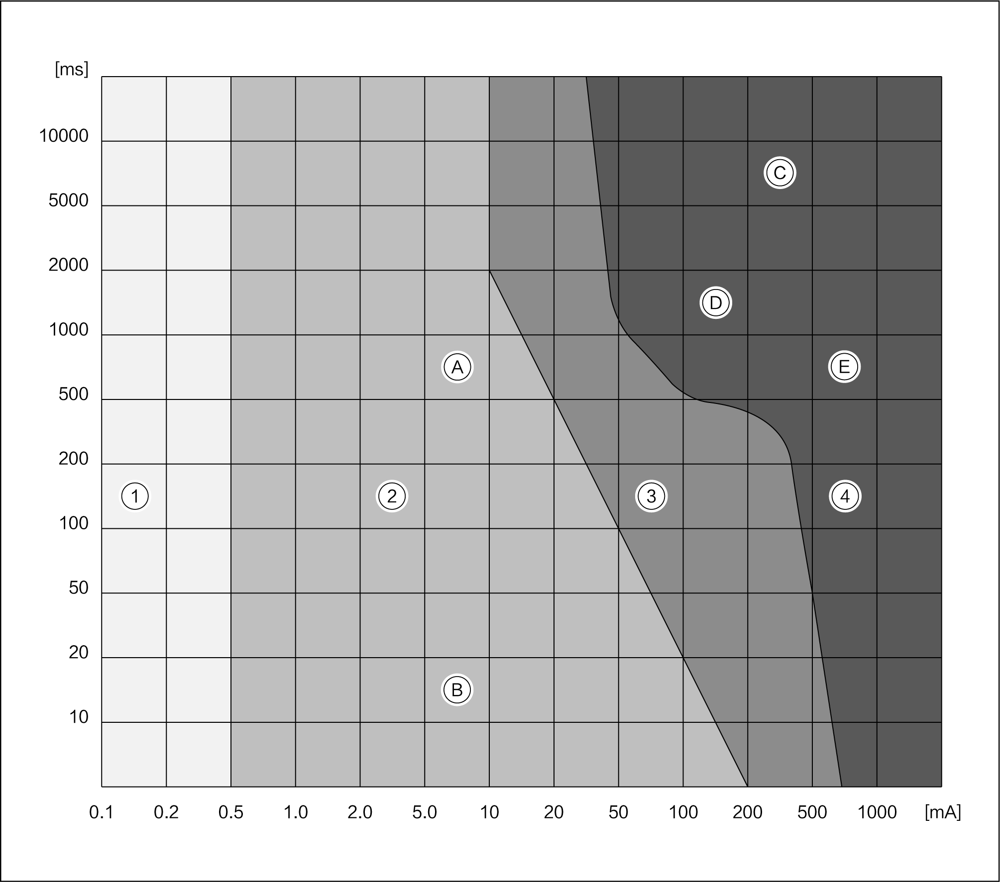

|
Symbol |
Meaning |
|---|---|
|
A |
Release limit |
|
B |
Release limit 10ms |
|
C |
Ventricular fibrillation |
|
D |
Over 300ms |
|
E |
Possible ventricular fibrillation |
Strength class 1:
No matter how long it is, there is no adverse effect.
Strength class 2:
0.5~2.0mA: current can be felt.
3~5mA: begin to feel pain.
10~20mA: release limit value.
It is generally not dangerous when current flows through the body.
Strength class 3:
Muscle spasm.
Dyspnea.
Arrhythmia.
Generally, it will not cause organ injury.
Strength class 4:
Cardiac fibrillation.
Cardiac arrest.
Respiratory arrest.
Life threatening.
Hazardous current.
Alternating current above 25V and direct current above 60V are dangerous.
A current of about 5mA passing through the human body is regarded as an "Electrical Accident". In such case, numbness will occur, but the current can still be conducted.
A current of about 10mA passing through the human body reaches the limit of the derived current. The human body begins to contract and can no longer conduct the current. The residence time of the current increases accordingly.
Prolonged retention of 30~50mA alternating current leads to respiratory arrest and ventricular fibrillation.
When the current passing through the human body is about 80mA or more, it is considered as the "Critical Value".
Why is AC voltage more dangerous than DC voltage?
AC voltage generates alternating current in the human body, which will cause muscle tissue and the heart to vibrate.
The lower the frequency of AC voltage, the higher the risk.
Alternating current may trigger ventricular fibrillation, which is fatal without first aid.
Internal resistance of human body.
For high current caused by high voltage, the corresponding resistance in human body is very low. In particular, the blood in all blood vessels is a good conductor. Different contact points in electrical accidents have different effects on human body.
Example: electrical accident caused by 288V DC voltage:
The skin resistance varies greatly. (depending on skin hardness, humidity, conductivity...) However, for voltages above 100V, the skin resistance is almost 0 Ω. The skin is completely punctured.
Example of human current: I=U/R=288V/1080Ω=0.27A.
If the retention time of alternating current in the heart reaches about 10~15ms, it will be fatal (ventricular fibrillation).
Electric shock and accident consequences.
Electric shock effect.
There will be electric shock response when the current is lower than the conduction limit, which is easy to cause injury due to uncontrolled limbs and loss of balance.
Thermal effect.
Burns and coking may occur at the current inlet and outlet points, internal burns may occur as well. The kidneys may be overloaded, which is fatal.
Chemical effects.
Blood and cell fluid become electrolyte and get electrolyzed. Serious poisoning occurs. The poisoning may be found after a few days, making the damage serious.
Muscle stimulation effect.
All body functions and muscle movements are controlled by the brain through electro photoluminescence of the nervous system. If the current through the human body is too high, the muscles begin to twitch, and the brain can no longer control the muscle tissue.
Consequences: for example, a clenched fist can no longer be opened or moved. If the current passes through the thoracic cavity, the lungs will produce spasm (respiratory arrest), and the heartbeat rhythm will be interrupted (ventricular fibrosis and fibrillation, unable to perform the contraction and deployment of the heart).
Thermal effect of static short circuit.
The sharp heating of the tool will melt the material, which may cause burns.
Spark due to short circuit.
The metal melts quickly, producing splashing sparks, and the temperature of splashed metal particles exceeds 5000°C. This may cause burns and serious eye injury.
Arc light generated when the live high voltage line is connected and disconnected.
Light radiation may cause electric ophthalmia.
First aid measures for electric shock accidents.
What should be remembered to when rescuing the injured in an electrical accident?
Your own safety comes first.
Never touch a person who is still in contact with the voltage.
If possible, power off the electrical system immediately (turn off the ignition switch or pull out the maintenance switch immediately).
Use non-conductive objects (wood, broom handle, etc.) to separate the victim or conductor from the voltage.
What shall be noted when giving first aid after an electric shock accident (no response from the victim)?
First, determine whether the victim still has vital signs, such as pulse and breathing.
Call the emergency doctor immediately, or ask someone else to do it.
Give cardiopulmonary resuscitation until the doctor arrives.
In case of respiratory arrest: use a nonprofessional defibrillator (if any).
What shall be noted when giving first aid after an electric shock accident (the victim has response)?
Cool the burned area and wrap it up with sterilized lint free cloth.
Even if the victim refuses, make him receive treatment (to avoid long-term sequelae).
First aid measures for starter iron battery accident.
In case of skin contact, rinse it with plenty of water.
In case of inhale gas, immediately breathe a lot of fresh air.
In case of eye contact, rinse it with plenty of water (for at least 10min).
If swallowed starter iron battery, drink plenty of water and avoid vomiting.
Seek medical assistance.